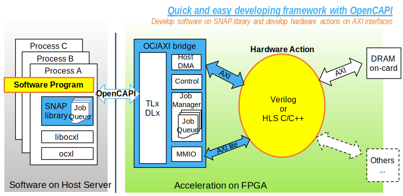

OC-Accel Overview
OpenCAPI Acceleration Framework, abbreviated as OC-Accel, is a platform to enable programmers and computer engineers to quickly create FPGA-based accelerations. The acceleration action's software part and hardware part share the server host memory data through OpenCAPI interface. This framework was named SNAP framework for CAPI1.0 and CAPI2.0 and may be also referred as OC-SNAP.
What is OpenCAPI
OpenCAPI (Open Coherent Accelerator Processor Interface) is an open coherent high performance bus interface based on a new bus standard. Driven by the emerging accelerated heterogeneous computing and advanced memory/storage solutions, It provides an Open Interface Architecture that allows any microprocessor to attach to
- Coherent user-level accelerators and I/O devices
- Advanced memories accessible via read/write or user-level DMA semantics
Its specifications and ecosystem are managed by an open forum OpenCAPI Consortium.
What can I do with it
OC-Accel helps you create an accelerator on a certain FPGA card. Refer to "User Guide" tab for a more detailed step-to-step guide.
Preparation
Find out the "hot-spot" function to be moved to FPGA. This function, usually computation intensive, is also named as "action" in the following description.
Step1: Work on software part
Put the action code into a function in the main software code, and determine the function parameters required. Add the few libosnap API functions that required to set up CAPI to the main software.
Step2: Work on hardware part
Write the "hardware action" in a supported programming language, such as Vivado HLS or Verilog/VHDL. Together with the software part done in above step, run a co-simulation to verify the correctness. After the co-simulation is done, generate the FPGA bitstream.
Step3: Deploy to Power9!
Program the bitstream to a real FPGA card plugged into a supported Power9 machine. Copy, compile and execute the source code of software part, and see the acceleration!
OC-Accel Framework

The framework hardware consists of a AXI-to-CAPI bridge unit, memory-mapped register I/O, host DMA, and a job management unit. It interfaces with a user-written action (a.k.a. kernel) through an AXI-lite control interface, and gives coherent access to host memory through AXI. Optionally, it also provides access to the on-card DRAM via AXI. A NVMe host controller-AXI bridge complements the framework for storage or database applications as an independent unit. Software gets access to the action through the libosnap library, allowing applications to call a "function" instead of programming an accelerator. The framework supports multi-process applications and can be extended to support multiple instantiated hardware actions in parallel.
For more information, please refer to "Deep Dive" tab.
Dependencies
Machine and Tools for Development
Development is usually done on a Linux (x86) computer. See examples of supported development configurations. The required tools and packages are listed below. Web access to github is recommended to follow the build instructions. A real FPGA card is not required for the plain hardware development.
(a) Xilinx Vivado
OC-Accel currently supports Xilinx FPGA devices, exclusively. For synthesis, simulation model and image build, the Xilinx Vivado 2018.2 tool suite is recommended. https://www.xilinx.com/products/design-tools/hardware-zone.html
(b) OpenCAPI TlxDLx package
(c) Build process
Building the code and running the make environment requires the usual development tools gcc, make, sed, awk. If not installed already, the installer package build-essential will set up the most important tools.
Configuring the OC-Accel framework will call a standalone tool that is based on the Linux kernel kconfig tool. The ncurses library must be installed to use the menu-driven user interface for kconfig.
(d) Run Simulation
For simulation, OC-Accel relies on the xterm program.
You can use the build-in simulation xsim from Xilinx Vivado, or you can also use other simulations. Check Co-simulation for more information.
Server and FPGA cards for Deployment
(a) Supported Power9 servers
Lagrange Chip based
Monza Chip based
(b) FPGA Card selection
As of now, the following FPGA cards can be used with OC-Accel
Alphadata 9V3
Compliance with SNAP1.0/2.0
https://github.com/open-power/snap has the acceleration framework for CAPI1.0 and CAPI2.0. Correspondingly, we call that repository SNAP1.0/2.0.
This OC-Accel framework has the similar structure, and the interfaces on "Software Program" and "Hardware Action" stay the same. Generally, your actions running on SNAP1.0/2.0 can be moved to OC-Accel directly without changing source-code. Check Migration Guide for more information.
Read more
This project is an initiative of the OpenPOWER Foundation Accelerator Workgroup. Please see here for more details: